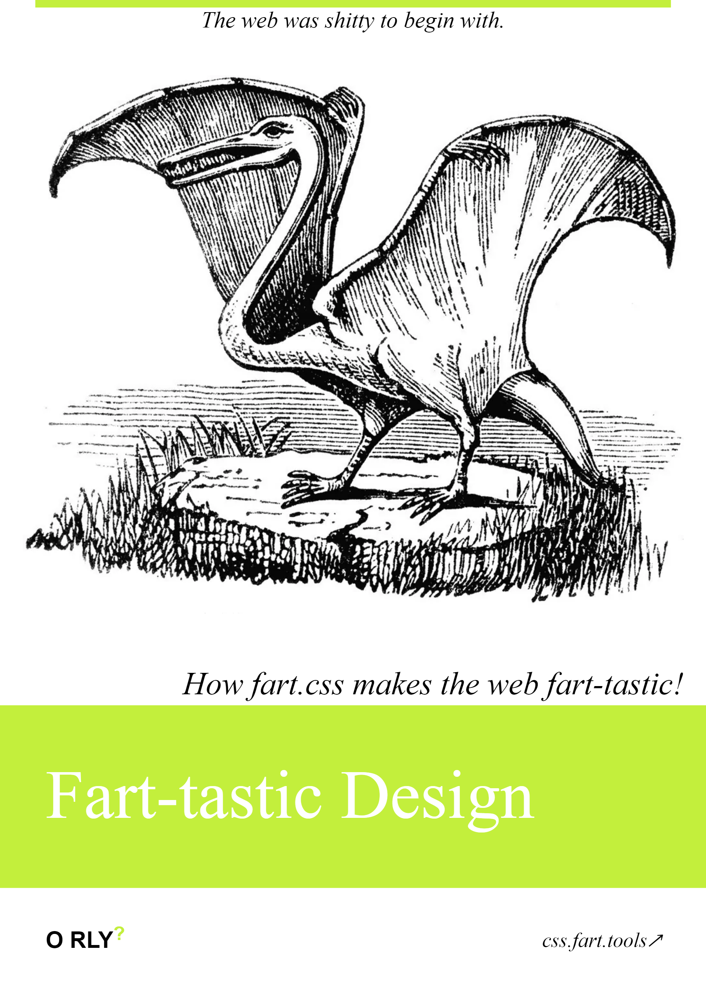

Fart.css is a CSS library of styles reusable across your fart-tastic frontends.
Getting started
To get started with Fart.css, include the following line in the
<head> of your HTML file:
<link rel="stylesheet" type="text/css" href="https://css.fart.tools">From there, you can use the classes and styles provided by the CSS library.
Variables
Fart.css makes use of CSS variables, which you can reference using var(--css-variable) for colors:
Colors are defined in the root.css file.
:root {
--fart-primary: #7dd87f;
--fart-dark-primary: #0f2a0f;
--fart-darker-dark-primary: #0a1f0a;
--fart-lighter-dark-primary: #004021;
--fart-secondary: #db7093;
--fart-highlight: rgba(74, 140, 86, 0.3);
--fart-white: #ddd;
--fart-off-white: #aaa;
}
Fonts
Keyframes
Fart.css provides a set of keyframes for animations in the keyframes.css file.
Semantics
Fart.css provides implicit styling for a set of common HTML elements in the semantics.css file.
Body and HTML elements are styled with:
html,
body {
background-color: var(--fart-darker-dark-primary);
color: var(--fart-white);
font-family: sans-serif;
margin: 0;
}
Check out the available styles in the semantics.css file.
Headings
Headings <h1> through <h6> are
styled with a custom font and size.
Example h1
Example h2
Example h3
Example h4
Example h5
Example h6
<h1>Example h1</h1>
<h2>Example h2</h2>
<h3>Example h3</h3>
<h4>Example h4</h4>
<h5>Example h5</h5>
<h6>Example h6</h6>
Links
Links <a>, .fart-link, and
.fart-link-visible-on-hover are styled with a custom
color and hover effect. Use .fart-link-visible-on-hover
to style links whose underline is only visible on hover.
<a class="fart-link" href="#">Example .fart-link</a>
<a class="fart-link-visible-on-hover" href="#">Example .fart-link-visible-on-hover</a>
Lists
Lists <ul> and <ol> are styled
with a custom color and padding.
- Example list item 1
- Example list item 2
-
Example nested list
- Example nested list item 1
- Example nested list item 2
<ul>
<li>Example list item 1</li>
<li>Example list item 2</li>
<li>
Example nested list
<ul>
<li>Example nested list item 1</li>
<li>Example nested list item 2</li>
</ul>
</li>
</ul>
Blockquotes
Blockquotes <blockquote> are styled with a custom
color and padding.
Example blockquote
<blockquote>Example blockquote</blockquote>Horizontal rule
Use <hr> or .fart-hr to create a
horizontal rule. The rule is styled with var(--fart-primary).
<hr>
<!-- Or with class -->
<hr class="fart-hr">
Misc
Fart.css provides miscellaneous styles in the misc.css file.
Buttons
Buttons .fart-button have a rounded button style with a
custom color and hover effect.
Disabled Buttons
Disabled buttons can be created using the :disabled
pseudo-class for <button> elements, or the
.fart-button-disabled class for <a>
elements. Disabled buttons are visually muted and do not respond to
user interactions.
<!-- Using :disabled for button elements -->
<button class="fart-button" disabled>Disabled button</button>
<!-- Using class for anchor elements -->
<a class="fart-button fart-button-disabled" href="#" aria-disabled="true" tabindex="-1" onclick="return false;">Disabled link</a>
Button Groups
Button groups .fart-button-group allow you to group
multiple buttons together on a single line with connected borders.
Wrap multiple .fart-button elements in a container with
the .fart-button-group class.
<div class="fart-button-group">
<a class="fart-button" href="#">Google</a>
<a class="fart-button" href="#">FartLabs</a>
<a class="fart-button" href="#">Apple</a>
</div>
Sections
Sections .fart-section are styled with a custom color
and padding.
<section class="fart-section">
<!-- Your content here -->
</section>
Headers
Headers .fart-header are styled with a custom font and
size.
<span class="fart-header">Example header</span>Text gradient
Text gradients .fart-text-gradient are styled with a
custom gradient.
text gradient
<span class="fart-text-gradient">Example text gradient</span>Special text
Special text .fart-text-special are styled with a
custom gradient.
<span class="fart-text-gradient">
The <span class="fart-text-special">special text</span> in a gradient.
</span>
Sparkles
Sparkles .fart-sparkle are styled with sparkle emojis
on either side of the text content.
<span class="fart-sparkle">Example sparkle</span>Hoverable logos
Hoverable logos .fart-logo are styled with a custom
animation on hover.
<a class="fart-logo" href="#">🧪</a>Border tubes
Border tubes .border-tube-empty, .border-tube-green,
.border-tube-purple, .border-tube-yellow,
.border-tube-turquoise, .border-tube-magenta,
.border-tube-orange, and .border-tube-blue
are styled with an animated border image.
Example border tubes
-
Example border tube with
.border-tube-emptyCSS class. -
Example border tube with the
.border-tube-emptyCSS class and the.glowCSS class. -
Example border tube with
.border-tube-greenCSS class. -
Example border tube with the
.border-tube-greenCSS class and the.glowCSS class. -
Example border tube with
.border-tube-purpleCSS class. -
Example border tube with the
.border-tube-purpleCSS class and the.glowCSS class. -
Example border tube with
.border-tube-yellowCSS class. -
Example border tube with the
.border-tube-yellowCSS class and the.glowCSS class. -
Example border tube with
.border-tube-turquoiseCSS class. -
Example border tube with the
.border-tube-turquoiseCSS class and the.glowCSS class. -
Example border tube with
.border-tube-magentaCSS class. -
Example border tube with the
.border-tube-magentaCSS class and the.glowCSS class. -
Example border tube with
.border-tube-orangeCSS class. -
Example border tube with the
.border-tube-orangeCSS class and the.glowCSS class. -
Example border tube with
.border-tube-blueCSS class. -
Example border tube with the
.border-tube-blueCSS class and the.glowCSS class.
<!-- Basic border tube -->
<div class="border-tube-empty">
<p class="border-tube-content">Your content here</p>
</div>
<!-- Border tube with glow effect -->
<div class="border-tube-empty glow">
<p class="border-tube-content">Your content here</p>
</div>
<!-- Colored border tubes -->
<div class="border-tube-green">
<p class="border-tube-content">Your content here</p>
</div>
<div class="border-tube-purple">
<p class="border-tube-content">Your content here</p>
</div>
<div class="border-tube-yellow">
<p class="border-tube-content">Your content here</p>
</div>
<div class="border-tube-turquoise">
<p class="border-tube-content">Your content here</p>
</div>
<div class="border-tube-magenta">
<p class="border-tube-content">Your content here</p>
</div>
<div class="border-tube-orange">
<p class="border-tube-content">Your content here</p>
</div>
<div class="border-tube-blue">
<p class="border-tube-content">Your content here</p>
</div>
You made it to the bottom!
Thanks for checking out Fart.css! If you have any questions or feedback, Chat↗ with the community on Discord and check out our ★Source↗ on GitHub! Top↑